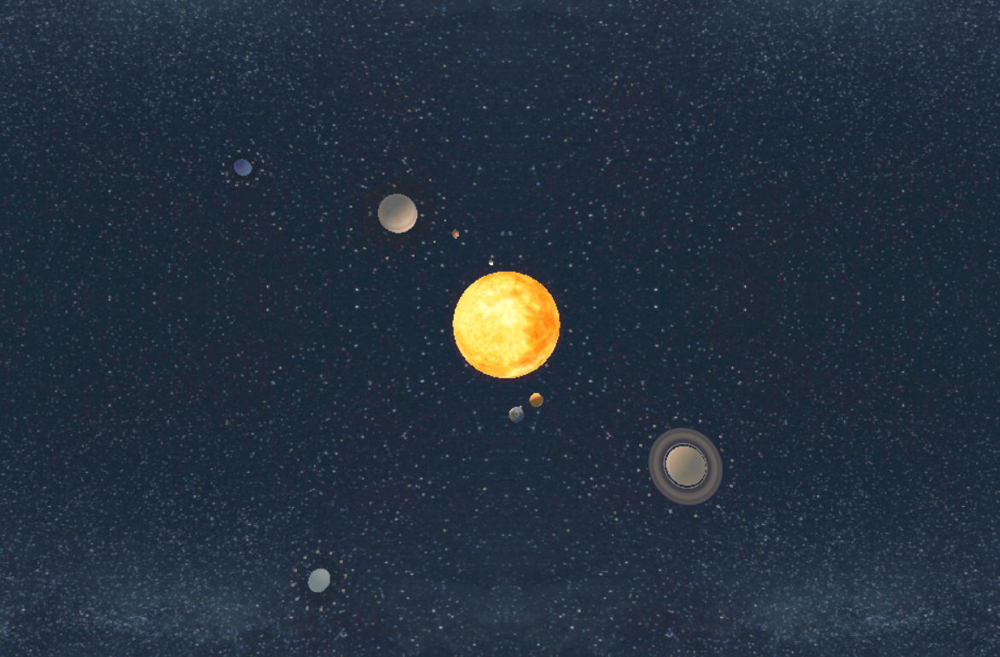
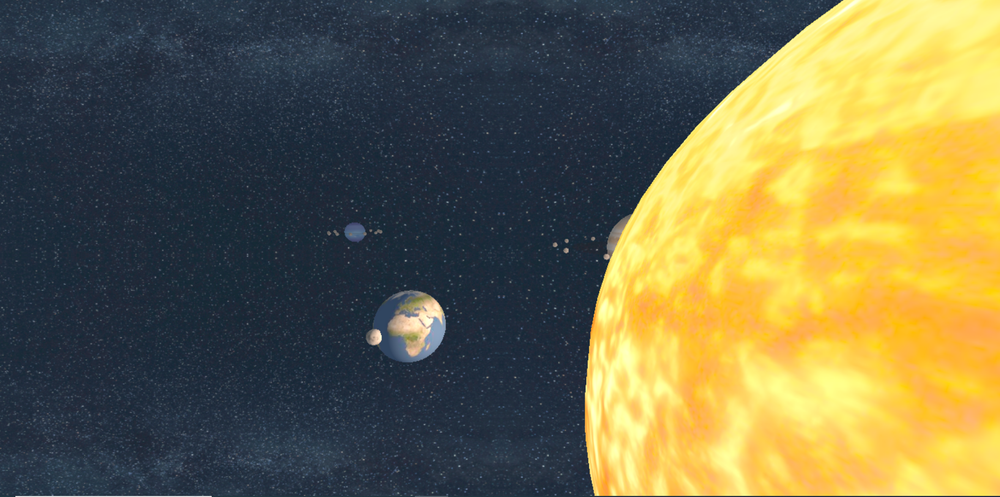
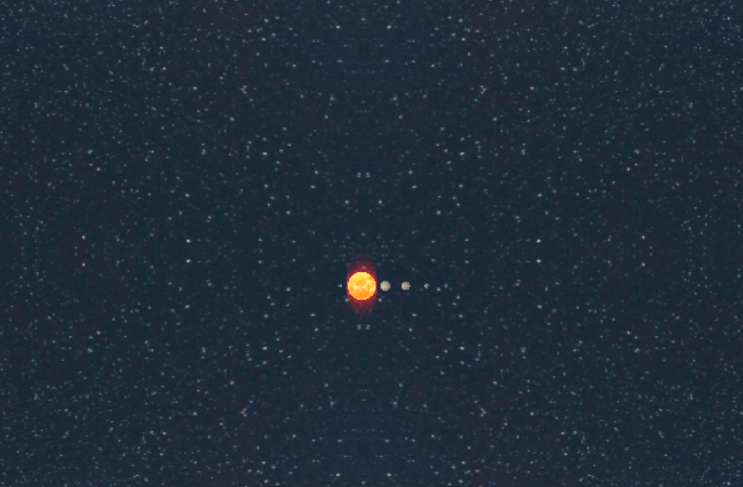

Project Overview
This project is a recreation of the solar system, including the sun along with every planet. Every planet is designed to revolve around the sun, along with having their own moons constantly orbiting them. Additionally, the user can pause this rotation and control it on their own by dragging around the Earth.
Controls
- Press SPACE to pause/resume the simulation
- When paused, hold SHIFT and drag the Earth with LEFT CLICK held to control simulation
- Press X to toggle Pluto
Details
This project showcases modelling, animation, lighting, texture-mapping, and interactivity (with picking) in three.js. The most complicated aspect of this project is the intersection between the automated animation, and the user-inputted interactions, both of which could dictate the movement of the planets.
Future Plans
The biggest issue of this planet is the simple look of the sun. Outside of the heat effect, which is designed to only be visible from a distance, the sun looks quite simple up close and may benefit from some simple animations in the future. Additionally, a more dynamic background could help to make this solar system look a bit more realistic.
Gallery


